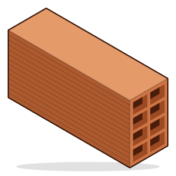
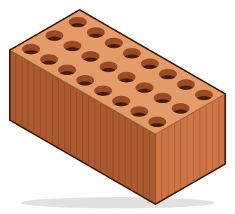
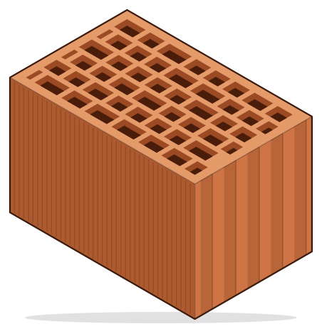
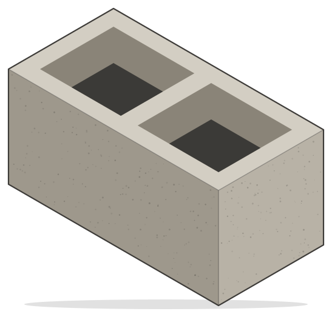

01
Ladrillo hueco convencional
Tabiquería interior y distribución de viviendas, trasdosados y divisiones. El sistema más versátil, con buena planeidad para guarnecer o alicatar.
Subcontrata de tabiquería Alicante · Murcia · Valencia
Tabiquería interior y cerramientos con equipo propio. Más de 10 años en obra y capacidad disponible para nuevos proyectos.
Sistemas
Ejecutamos cada sistema según proyecto, con el mismo equipo de principio a fin.

Tabiquería interior y distribución de viviendas, trasdosados y divisiones. El sistema más versátil, con buena planeidad para guarnecer o alicatar.

Para muros que necesitan más resistencia y aislamiento acústico: medianeras, separación entre viviendas y cerramientos.

Bloque cerámico de gran formato para muros de carga y fachadas de una sola hoja, con buen aislamiento térmico y acústico.

Muros resistentes para naves, garajes, vallados, muros de contención y vasos de piscina.
Obras
Algunos de los trabajos que hemos ejecutado en Alicante, Murcia y Valencia.
Elda · Alicante
Ejecución completa del forjado sanitario con muros de bloque de hormigón, coronados con bloque en U armado y hormigonado para formar el zuncho perimetral.
Valencia
Ejecución de las medianeras de ladrillo cerámico entre pilares, levantados a lo largo de toda la parcela junto a las edificaciones colindantes.
Alicante
Ejecución de la tabiquería interior de ladrillo cerámico en la ampliación de un chalet, incluida la planta bajo cubierta inclinada.
Alicante
Ejecución de un muro de bloque termoarcilla para separar dos parcelas: un centro deportivo y una vivienda unifamiliar.